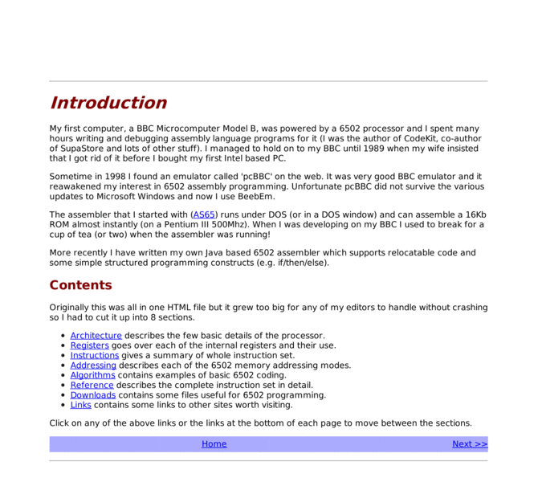

Previewing: 6502 Assembly Language Programming Previewing: 6502 Assembly Language Programming 
Use the left/right red arrow controls to navigate through this ring - Click the preview image to visit the member site.

Reference information and resources for programming the 6502 microprocessor.
6502 Assembly Language Programming owned by:
 andrew_jacobs andrew_jacobs
A member of 6502 Web Ring since 09/24/2015.
|
|